Capstone · Every layer · LinkedIn ↗ · Portfolio ↗ · Email

A GitHub Action rebuilds this every day from my real contribution calendar. Most of it lands in private repos for production systems I run day to day.
Computer & Systems Engineering graduate, Ain Shams University × University of East London (2026). I've designed a CPU in VHDL, changed the MINIX 3 scheduler, written a compiler front-end, and shipped cloud apps. For my capstone with Siemens Egypt I built the safety layer that lets an LLM edit a live engineering model.
I like systems where you can follow the signal from the hardware up through every layer.

AI-Powered MBSE Copilot for Eclipse Capella, built with the AE Team at Siemens Egypt and presented at the ASU graduation showcase.
Python MCP LLM orchestration RAG Py4J Java Eclipse Capella Docker MBSE
Code is under NDA. I'm happy to walk through the architecture on a call.
University projects ordered by layer, from the hardware up. Most course repos are private, so 🔒 means I can show a walkthrough on request.
| Layer | Project | What I built | Code |
|---|---|---|---|
| Gates | ATM Bank System | Led two sub-teams through a full ASIC flow: RTL, simulation, synthesis and formal verification. | repo ↗ |
| CPU | MIPS Processor | Harvard-architecture MIPS in VHDL built from scratch: ALU, control unit, register file and memory. | 🔒 |
| Kernel | MINIX 3 Scheduling & Paging | Custom CPU scheduling and memory paging written inside the real MINIX 3 kernel source tree and benchmarked, not simulated. | 🔒 |
| Compiler | C-like Language Front-end | Lexer and recursive-descent parser in C++ that produce ASTs, with a GUI tree visualiser. | 🔒 |
| Runtime | C Performance Monitor | Header-only C instrumentation library that traces call hierarchies and timing, with a Python report generator. | repo ↗ |
| Intelligence | AI Algorithms Analysis Platform | Benchmarks Minimax, α-β pruning, Deep Q-Learning and RL across game environments, with live reward curves. | 🔒 |
| Cloud | University Management System | Django app with Firebase, role-based access and full UML documentation, deployed to GCP through GitHub Actions CI/CD. | 🔒 |
Hardware Verilog · VHDL · MIPS assembly · ASIC flow · formal verification
Systems C · C++ · MINIX 3 · compilers · Linux
AI Python · LLM orchestration · agentic pipelines · MCP · RAG · Hugging Face · Deep Q-Learning
Software & cloud Java · Django · Laravel · SQL · Firebase · GCP · Docker · GitHub Actions
FROM GATES TO AGENTS.